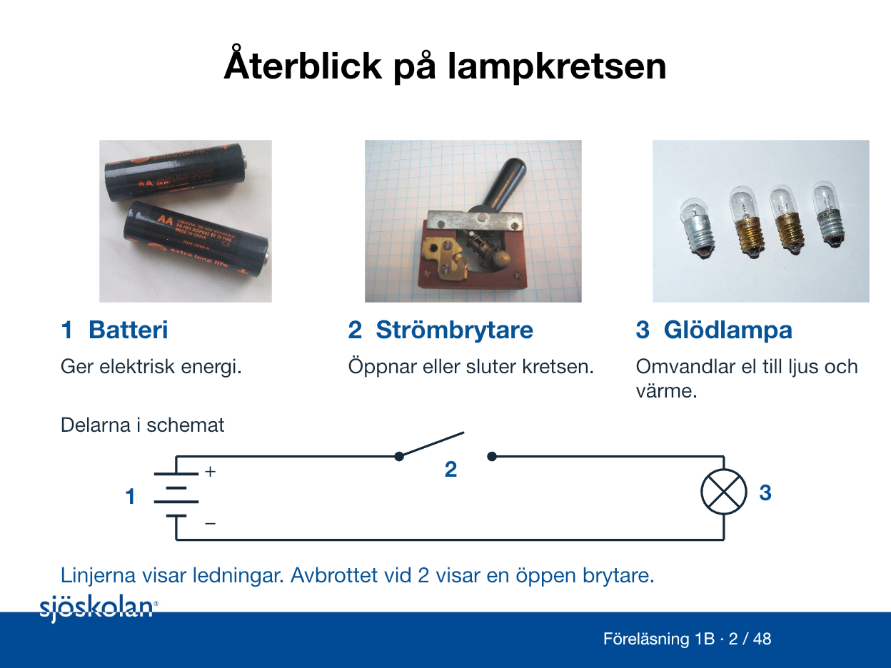

Lampkretsen – delarna och symbolerna
Börja med fotografierna och jämför sedan med schemat. Siffrorna kopplar varje komponent till dess symbol.

1. Batteriet
Batteriet omvandlar kemisk energi till elektrisk energi. Plus och minus anger batteriets poler. I schemat visar grupperna med långa och korta streck batteriets celler. Det långa strecket anger plus och det korta minus.
2. Strömbrytaren
Strömbrytaren öppnar eller sluter kretsen. I schemat visar den sneda linjen den rörliga kontakten. Den når inte fram till den andra punkten. Brytaren är därför öppen. Mellanrummet är en symbol för ett avbrott, inte ett mått på ett skyddsavstånd.
3. Glödlampan
Glödlampan omvandlar elektrisk energi till ljus och värme. Cirkeln med ett kryss är dess symbol. En sådan förbrukare kallas också last.
Ledningarna och hela vägen
Linjerna mellan delarna visar elektriska ledningar. De visar vilka delar som är elektriskt förbundna, inte hur de ligger placerade i ett rum.
Följ vägen från batteriets pluspol, via brytaren och lampan, tillbaka till batteriets minuspol. När brytaren är öppen är vägen avbruten. Ingen ström går då genom lampan i den här modellen. Spänning kan ändå finnas mellan batteriets poler.
Ordet lastström betyder här strömmen genom lampan. Ledningen tillbaka till batteriet ingår i den normala strömvägen. Den ska inte förväxlas med en skyddsledare eller med fartygsskrovet.
Bilder och underlag
Fotografierna visar exempel på komponenttyper. Schemat är en förenklad undervisningsmodell, och bilderna anger inte att de fotograferade delarnas märkdata passar ihop. Distansuppgiften är att läsa och förstå bilden.